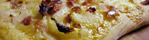

Flammekueche
5 von 6teig: 500 g mehl und 1 1/2 tl salz in einer schüssel mischen. 20 g hefe, 3 dl wasser und 2 el öl zu mehl
geben und zu einem geschmeidigen teig kneten. mind. eine stunde zugedeckt aufgehen lassen. belag: 400 g speckwürfeli und 4 grosse in scheiben geschnittene zwiebeln dämpfen. nebenbei 300 g rahmquark,
2 dl rahm, salz, pfeffer und etwas muskat mischen. den aufgegangen teig sorgfältig vierteln und so dünn
wie möglich auswalen. den flamme kueche belegen und bei 300 g für ca. 12 minuten backen.
